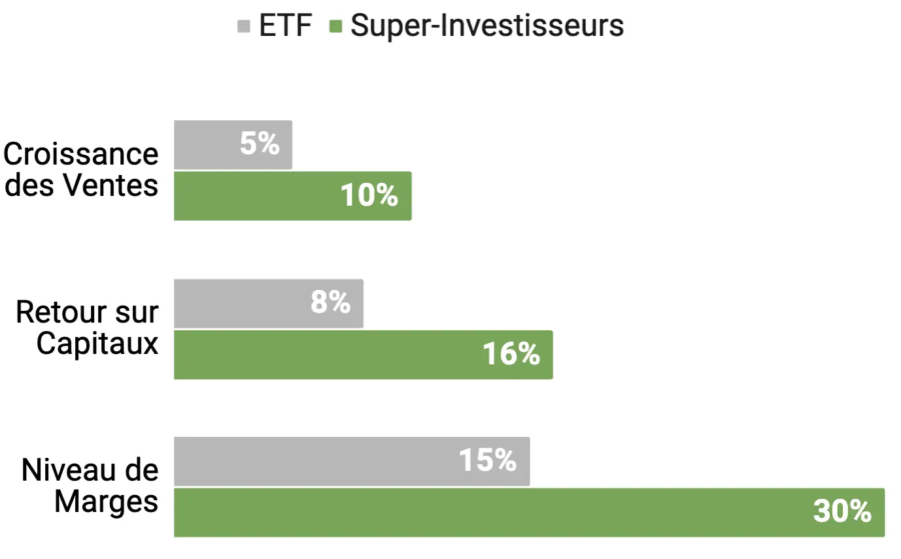
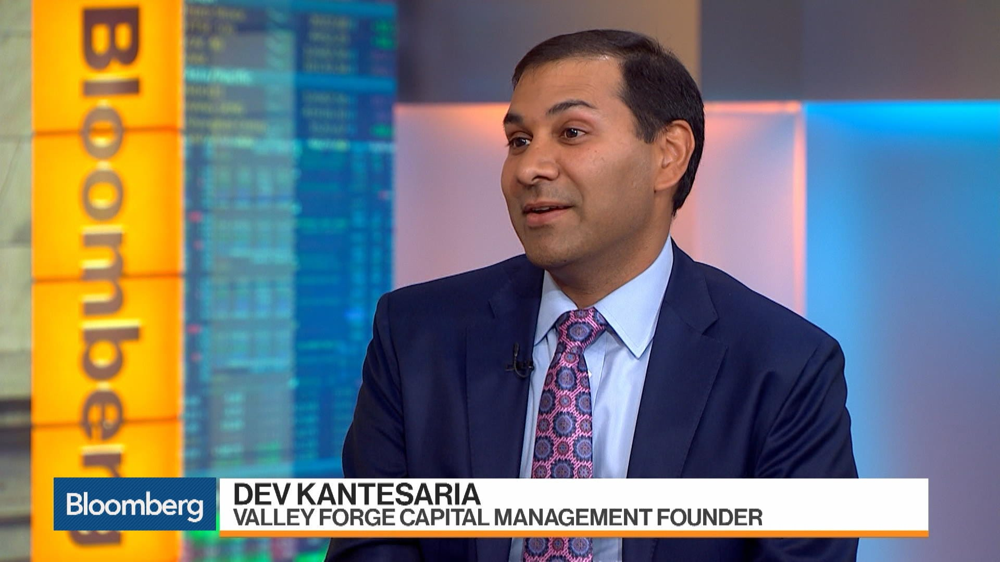

En Bourse, il est illusoire d'espérer réinventer la roue tout seul dans son coin. Les plus grands investisseurs de ce monde ont passé des décennies à affiner des méthodes redoutables, à essuyer des crises majeures et à formaliser des grilles de lecture infaillibles pour identifier la crème de la crème des entreprises mondiales. Plutôt que de tâtonner par essais et erreurs au risque de commettre des erreurs de débutant coûteuses, l'une des démarches les plus intelligentes et formatrices qui soient consiste à s'inspirer des meilleurs : les superinvestisseurs.
Dans ce chapitre, nous allons décrypter qui sont ces figures de la gestion institutionnelle, comment ils gèrent des milliards de dollars, quels sont nos avantages uniques de petits investisseurs particuliers face à eux, et surtout, comment filtrer leurs portefeuilles pour ne retenir que les profils qui partagent notre philosophie de conviction et de concentration.
1. Que sont les Superinvestisseurs et comment fonctionnent-ils ?
Les superinvestisseurs sont des gestionnaires de fonds d'investissement d'élite, des fondateurs de hedge funds ou des pionniers de la gestion pour compte de tiers qui affichent sur de très longues périodes (plusieurs décennies) des performances historiques largement supérieures à celles des grands indices de référence comme le S&P 500.
Contrairement aux traders court-terme ou aux spéculateurs qui parient sur des mouvements de prix à l'horizon de quelques jours, ces investisseurs gèrent des capitaux colossaux (parfois plusieurs milliards de dollars) selon des principes de gestion fondamentale stricts. Ils fonctionnent généralement en prenant des positions extrêmement concentrées dans un nombre restreint d'entreprises après des mois de recherches approfondies, agissant non pas comme de simples actionnaires passifs, mais comme de véritables co-propriétaires d'entreprises.

Comme le met en lumière le graphique ci-dessus, les portefeuilles gérés par ces élites se distinguent nettement des ETF généralistes par des fondamentaux boursiers de très haute volée : une croissance des ventes supérieure, des rendements sur capitaux propres deux fois plus élevés, et des marges d'exploitation qui témoignent d'un pouvoir de marché hors du commun.
2. Notre Avantage Injuste : Pourquoi le Particulier bat le Gestionnaire de Milliards
L'idée reçue la plus tenace en finance veut qu'un investisseur particulier soit totalement démuni face à des armées d'analystes surdiplômés travaillant dans des tours de verre à Wall Street ou à la City de Londres. C'est exactement l'inverse ! En tant qu'investisseur individuel gérant votre propre capital, vous bénéficiez de trois avantages structurels massifs que les gestionnaires de fonds institutionnels envient secrètement :
- 1. L'agilité et la taille de portefeuille : C'est le frein numéro un des superinvestisseurs. Lorsqu'un fonds gère 10 milliards de dollars, il lui est physiquement impossible d'investir dans une excellente entreprise de moyenne capitalisation (mid-cap) pesant 1 milliard de dollars, car même une position de 2 % (200 millions) perturberait l'action et rendrait la sortie impossible. En gérant un portefeuille de 20 000 €, 50 000 € ou 200 000 €, vous pouvez vous positionner sur les pépites les plus dynamiques du marché sans le moindre problème de liquidité. Vous pouvez acheter et vendre en une fraction de seconde, là où un paquebot institutionnel met des semaines à ajuster ses lignes.
- 2. L'absence de pression de rachat à court terme : Les gestionnaires de fonds doivent rendre des comptes trimestriels à leurs clients institutionnels ou fortunés. Si un fonds sous-performe pendant six mois ou traverse une zone de turbulences conjoncturelles, ses clients retirent massivement leurs capitaux, forçant le gestionnaire à vendre ses meilleures actions au pire moment (au creux de la vague) pour honorer les retraits. En tant que particulier, votre seul "client", c'est vous-même. Personne ne viendra exiger un rapport trimestriel ni vous retirer vos fonds en cas de baisse temporaire. Vous possédez le luxe absolu du temps long.
- 3. La liberté totale d'allocation : Un fonds est généralement enfermé dans un mandat strict (par exemple : "Actions américaines uniquement", "Valeurs technologiques", ou "Fonds small-cap"). Vous, vous pouvez investir où vous voulez, quand vous le voulez : acheter une valeur de qualité américaine, une pépite européenne, ou tout simplement garder 100 % de cash en attendant la bonne opportunité, sans qu'aucun comité d'éthique ou de direction ne vienne vous freiner.
La citation à retenir 💬
"L'investissement n'est pas un jeu où celui qui a un QI de 160 bat celui qui a un QI de 130. Ce qu'il faut, c'est un cadre intellectuel stable pour prendre des décisions, et la capacité de ne pas laisser les émotions détruire ce cadre."
— Warren Buffett
3. Comment suivre les portefeuilles des Superinvestisseurs ?
Aux États-Unis, la loi boursière (via la SEC) impose à tous les gestionnaires institutionnels gérant plus de 100 millions de dollars d'actifs de publier obligatoirement un rapport officiel tous les trimestres : le formulaire 13F. Ce document liste de manière transparente l'intégralité des actions américaines détenues par le fonds à la fin du trimestre.
Plutôt que de décortiquer manuellement des milliers de pages de documents réglementaires bruts, vous pouvez vous appuyer sur des outils en ligne extraordinaires que nous avons déjà abordés au chapitre 6.15 :
- Dataroma.com : Le site de référence absolu pour suivre les portefeuilles des plus grands gourous de la planète. Il analyse les 13F et synthétise les achats, les ventes, les renforcements et les nouvelles lignes de dizaines de superinvestisseurs en un clin d'œil.
- Stockcircle.com : Un outil visuel redoutable qui compile les portefeuilles et permet de voir les consensus d'achat entre les différents superinvestisseurs, agissant comme un formidable filtre à idées d'investissement.
Attention cependant à ne pas tomber dans le piège du copier-coller aveugle ! Un rapport 13F est publié avec un décalage pouvant aller jusqu'à 45 jours après la fin du trimestre. Lorsqu'un superinvestisseur achète ou vend une action, le temps que vous le découvriez, le cours a pu évoluer. De plus, ces investisseurs possèdent des stratégies globales et des couvertures (options, shorts) que vous ne voyez pas. Le suivi des 13F ne doit jamais servir à copier bêtement un achat, mais à alimenter votre propre pipeline d'idées d'entreprises à creuser.
4. Le Tri Sélectif : Tous les Superinvestisseurs ne sont pas faits pour nous
Il est primordial de le comprendre : tous les superinvestisseurs ne méritent pas d'être suivis par un investisseur orienté qualité.
Beaucoup de grands noms de Wall Street affichent des performances spectaculaires en suivant des stratégies qui entrent en contradiction directe avec notre philosophie de long terme :
- Les adeptes de la décote pure (Deep Value / Ben Graham) : Acheter des entreprises en difficulté ou des "canards boiteux" juste parce qu'elles se soldent en dessous de leur valeur liquidative nette. Ce sont souvent des pièges à valeur (value traps) qui ne correspondent pas à notre recherche de Compounders.
- Les traders macroéconomiques et spéculateurs de taux : Des gérants qui parient sur l'or, le pétrole, les devises ou la dette souveraine en fonction des cycles économiques.
- Les investisseurs hyper-diversifiés : Des fonds qui détiennent 100 ou 200 lignes différentes, diluant complètement la performance des meilleures entreprises sous une montagne de sociétés moyennes.
- Les fonds qui sous-performent durablement les ETF : Statistiquement, une immense majorité de fonds gérés activement ne battent pas le S&P 500 sur longue période une fois déduits leurs frais de gestion exorbitants (les fameux "2 et 20").
Pour notre part, nous devons cibler exclusivement les investisseurs qui partagent notre ADN : la recherche obsessionnelle d'avantages concurrentiels durables (Moats), la concentration du portefeuille sur un nombre restreint d'excellentes entreprises, et la volonté de conserver ces titres pendant des années, voire des décennies.
5. Le Tier-List des 3 Superinvestisseurs à Suivre Absolument
Parmi l'élite mondiale, trois superinvestisseurs se distinguent particulièrement par une approche chirurgicale qui résonne parfaitement avec la philosophie Quality Investing de StocksPickeur. Analysons-les en détail :
1. Chuck Akre — Akre Capital Management
Compounding MachinesStyle : Quality Investing · Long terme · Concentration
Chuck Akre est un investisseur américain reconnu pour sa philosophie légendaire des Three-Legged Stool (le tabouret à trois pieds) : rechercher des entreprises possédant un avantage concurrentiel durable (MOAT), dirigées par un excellent management intègre et talentueux, et capables de réinvestir leurs bénéfices à des taux de rendement élevés. Il privilégie les entreprises exceptionnelles capables de composer du capital pendant plusieurs décennies, tout en restant extrêmement attentif au prix payé.
Sa spécialité : Identifier les Compounding Machines, ces entreprises rares qui créent de la valeur de manière exponentielle sur le long terme.
Site de référence : Akre Capital Management.

2. Bill Ackman — Pershing Square Capital Management
Activisme & QualitéStyle : Quality Value · Activisme actionnarial · Concentration extrême
Bill Ackman est un investisseur américain charismatique qui recherche des entreprises de grande qualité, disposant de solides avantages concurrentiels, d'une forte génération de cash-flow et d'un management compétent. Il adopte une approche ultra-concentrée, en prenant des positions majeures dans un nombre très limité d'entreprises. Sa particularité unique est de combiner investissement fondamental et activisme actionnarial : il n'hésite pas à intervenir directement dans la stratégie, la gouvernance ou l'allocation du capital des entreprises de son portefeuille pour libérer leur plein potentiel de création de valeur.
Sa spécialité : Identifier des entreprises de grande qualité temporairement sous-valorisées et utiliser son poids d'actionnaire pour catalyser leur croissance.
Site de référence : Pershing Square Capital Management.

3. Dev Kantesaria — Valley Forge Capital Management
Monopoles & OligopolesStyle : Quality Investing · MOAT exceptionnels · Concentration absolue
Dev Kantesaria est un gestionnaire américain particulièrement sélectif qui recherche des entreprises possédant des avantages concurrentiels extrêmement puissants, souvent sous forme de monopoles ou d'oligopoles de fait (comme ASML par exemple). Il privilégie les business models hautement prévisibles, les revenus récurrents, un pouvoir de fixation des prix (pricing power) incontestable, des marges élevées et de faibles besoins en capitaux d'investissement. Son portefeuille est l'un des plus concentrés du marché : il préfère détenir une poignée d'entreprises extraordinaires plutôt que de se diversifier dans des dizaines de sociétés simplement correctes.
Sa spécialité : Identifier les entreprises dominantes qui possèdent des MOAT presque infranchissables et générer des rendements records sur le très long terme.
Site de référence : Valley Forge Capital Management.
📌 En résumé : Comment différencier ces 3 maîtres ?
- Chuck Akre : Trouver les meilleures machines à composer (compounding machines) du marché.
- Bill Ackman : Acheter des entreprises exceptionnelles à des prix attractifs et utiliser l'activisme pour libérer leur valeur.
- Dev Kantesaria : Identifier les entreprises possédant les MOAT les plus infranchissables et les conserver indéfiniment.
6. Le Dimensionnement des Positions (Position Sizing) : Le Mythe de l'Hyper-Diversification
S'il y a bien une leçon magistrale à retenir de ces superinvestisseurs, c'est leur approche mathématique du dimensionnement de leurs positions. L'industrie financière classique martèle aux particuliers le dogme de l'hyper-diversification : "ne mettez pas tous vos œufs dans le même panier, achetez 50 ou 100 actions différentes". C'est une hérésie pour l'investisseur axé sur la qualité.
Observez la réalité des plus grands esprits de Wall Street : ils gèrent des portefeuilles extraordinairement concentrés. Pourquoi diluer ses meilleures idées (celles qu'on a étudiées pendant des mois et dont le Moat est incontestable) avec sa 40ème ou 50ème meilleure idée, juste pour cocher une case académique ?

La stratégie de Dev Kantesaria (Valley Forge) l'illustre à la perfection. Gérer 2,5 milliards de dollars avec seulement 10 lignes en portefeuille exige un niveau de certitude absolu sur les fondamentaux de ces entreprises. Lorsque vous avez identifié un monopole mondial infranchissable comme S&P Global ou un acteur essentiel comme ASML, l'acte de gestion le plus risqué n'est pas d'y allouer 15 % ou 20 % de votre portefeuille, mais de ne pas en détenir assez ! Concentrer son capital sur ses meilleures convictions est la signature des superinvestisseurs.
7. L'Inaction comme Stratégie (L'Attente du "Fat Pitch")
Une autre caractéristique frappante des portefeuilles de type Quality est leur très faible taux de rotation (turnover). Contrairement aux gérants actifs classiques qui achètent et vendent frénétiquement chaque trimestre pour justifier leurs frais, nos superinvestisseurs pratiquent ce que l'on pourrait appeler "la léthargie intelligente".
Ils maîtrisent l'art de l'inaction. Ils peuvent accumuler du Dry Powder (des liquidités) pendant des années, refusant catégoriquement de surpayer une entreprise, même si celle-ci est de qualité exceptionnelle. Ils attendent ce que Warren Buffett appelle le "Fat Pitch" (la balle parfaite au baseball) : ce moment rare où une crise macroéconomique ou une panique sectorielle irrationnelle fait chuter le cours d'une pépite mondiale bien en dessous de sa valeur intrinsèque. C'est à cet instant précis qu'ils déploient massivement leur capital avec une marge de sécurité.
8. La Psychologie face aux Krachs : Gérer les Drawdowns
S'inspirer des meilleurs, c'est aussi observer leur comportement clinique lorsque les marchés dévissent. Les superinvestisseurs ne cèdent jamais à la panique. Face à un krach de 20 % ou 30 % (un drawdown), ils n'utilisent pas de "stop-loss" algorithmiques pour liquider leurs positions.
Si la thèse fondamentale (le modèle d'affaires, l'avantage compétitif, l'intégrité de la direction) reste parfaitement intacte, une chute de 30 % du cours n'est pas perçue comme une perte en capital, mais comme une solde inespérée. Ils exploitent cette volatilité pour renforcer agressivement leurs lignes existantes à des valorisations bradées, sachant pertinemment que le marché finira par re-pondérer ces actifs à leur juste valeur une fois l'orage passé.
9. Le "Post-Mortem" : Savoir couper ses pertes sans ego
Toutefois, la résilience ne doit jamais se transformer en obstination aveugle. Même les plus grands génies de la finance se trompent, et c'est dans la gestion de l'erreur que se séparent les amateurs des professionnels.
La règle d'or est brutale mais salvatrice : dès l'instant où la thèse d'investissement initiale est brisée, il faut vendre immédiatement, quel que soit le prix, et sans aucun attachement émotionnel.

L'exemple le plus célèbre (et douloureux) est celui de Bill Ackman avec Valeant Pharmaceuticals. Convaincu par un modèle de croissance agressive par acquisitions, Ackman y a investi massivement. Cependant, lorsque des enquêtes ont révélé des pratiques comptables douteuses, un modèle de tarification prédateur et un management toxique, la thèse fondamentale s'est désintégrée en quelques semaines.
Malgré des milliards de dollars de moins-value latente, Ackman a fini par prendre la seule décision rationnelle : liquider l'intégralité de sa position. Il a encaissé une perte historique d'environ 4 milliards de dollars pour protéger le reste du capital de ses investisseurs. Un investisseur particulier aurait probablement été tenté de conserver le titre dans l'espoir illusoire de "se refaire" (le biais des coûts irrécupérables). Le superinvestisseur, lui, coupe la branche morte, fait son "post-mortem" pour comprendre son erreur d'analyse, et redéploie le capital restant sur une nouvelle thèse viable.
🔑 Ce qu'il faut retenir
S'inspirer des superinvestisseurs est un formidable accélérateur d'apprentissage en Bourse. Grâce aux formulaires 13F et à des outils comme Dataroma ou StockCircle, vous pouvez explorer les portefeuilles des plus grands esprits de la finance pour alimenter votre propre veille stratégique.
Rappelez-vous cependant que vous disposez d'un avantage injuste majeur face aux géants institutionnels : votre agilité et votre liberté totale d'investissement. En filtrant les portefeuilles pour ne retenir que les profils alignés sur notre approche — à l'image de Chuck Akre (machines à composer), Bill Ackman (activisme de qualité) et Dev Kantesaria (monopoles à douves profondes) —, vous disposez d'un vivier d'idées d'entreprises d'exception prêtes à être analysées en profondeur selon nos critères de sélection.